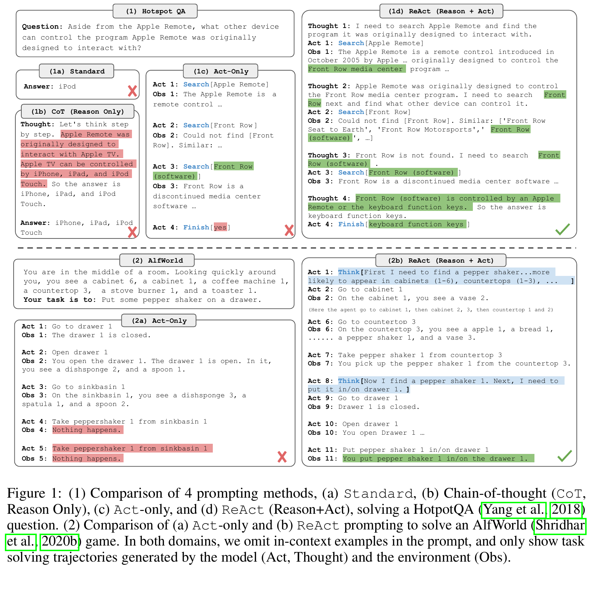
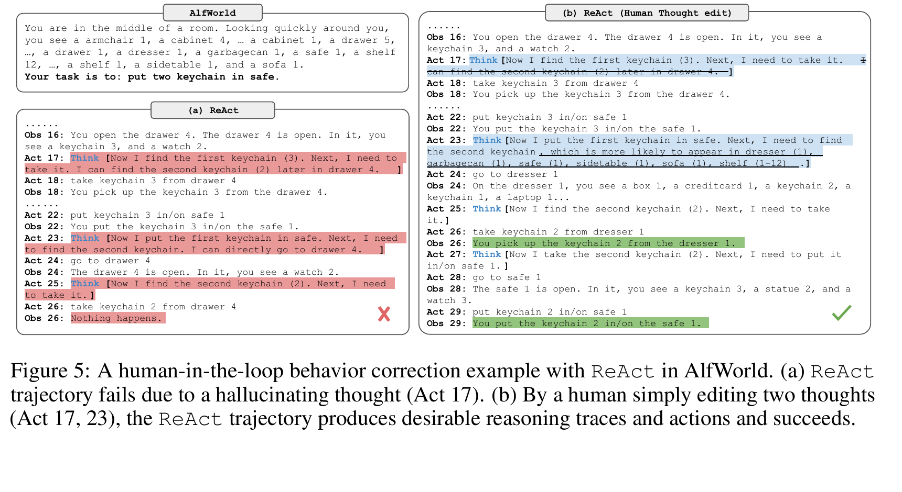

CoT-only
It can compose an answer from its context, but an unsupported early fact may propagate through later reasoning.
Strength: plans and synthesis.
Failure: no external correction.
A one-hour paper lesson
ReAct turns a language model’s next-token prediction into a closed loop: a thought selects an action, an action earns an observation, and the observation changes what the model should think next.
01 · The promise
A language model can write a plausible multi-step answer without checking it. It can also call a tool without knowing what to ask, what it learned, or when it is done. ReAct combines both abilities. By the end, you should be able to identify the causal job of every step in its loop and explain why more grounding does not mean guaranteed truth.
02 · The failed split
It can compose an answer from its context, but an unsupported early fact may propagate through later reasoning.
Strength: plans and synthesis.
Failure: no external correction.
It can search or issue environment commands, but may repeat poor actions or fail to organize retrieved facts into a plan.
Strength: access to state and tools.
Failure: weak subgoal tracking.
The paper’s answer is not “always retrieve.” It is an alternating protocol in which internal text decides what to do, and the environment has an opportunity to disagree.

03 · Name the actors before the loop
Yao et al. define ReAct by augmenting the ordinary external action space A with free-form language L (PDF p. 3). An external action receives new feedback; a thought only extends the context. That type difference is the whole design: thoughts can prepare and revise action, but only action can ask the world to answer back.
04 · Worked trace A
In the paper’s HotpotQA example (Figure 1, PDF p. 2), the question asks what device controls the software used by Apple Remote. A chain-of-thought baseline confidently names Apple devices; an action-only baseline gets stuck after unhelpful queries. ReAct takes a narrower route: it starts from Apple Remote, notices the returned link to Front Row, then searches that software rather than repeating the original query.
Trajectory ledger · Figure 1 reconstructed
Thought: identify an entity chain. The model does not yet know which link is decisive, so it plans a search rather than writing a final answer.
Static reading: identify the entity chain → search Apple Remote → observe its Front Row connection → reformulate around Front Row → observe the relevant control claim → finish “keyboard function keys.”
After the Apple Remote search surfaces Front Row, should the next move be (a) repeat the same search, (b) finish with a remembered answer, or (c) search Front Row?
05 · Worked trace B
The same loop applies when a tool changes the world. In the ALFWorld knife task (Appendix D.2, PDF pp. 28–30), ReAct breaks “put a clean knife on a countertop” into find → take → clean → place. It uses its thought steps to preserve that subgoal list while observations rule out locations or confirm progress. Action-only behavior in the compared trace repeats invalid moves; ReAct-IM has feedback but lacks the high-level decomposition.
Thought: find, take, clean, then place the knife.
Action: inspect likely locations; take the knife found on countertop 2.
Observation: the knife is now in inventory.
Thought: next unmet subgoal is cleaning; move to the sink before issuing clean.
Here an observation is a changing task state, not a passage. The useful thought is a compact plan and progress check. It tells the policy which constraint is still unsatisfied and prevents an action that the current state cannot support.
Source: faithful shortening of the ALFWorld comparison, Appendix D.2, pp. 28–30.
06 · Evidence
The following tables faithfully reconstruct selected rows from the paper. They are not a leaderboard for all agents: the QA experiments use PaLM-540B and narrow Wikipedia actions; the task-world results use different metrics and, in one case, best-of-six prompt reporting.
| Method | HotpotQA EM | FEVER accuracy |
|---|---|---|
| Standard | 28.7 | 57.1 |
| CoT | 29.4 | 56.3 |
| Act | 25.7 | 58.9 |
| ReAct | 27.4 | 60.9 |
| CoT-SC → ReAct | 34.2 | 64.6 |
| ReAct → CoT-SC | 35.1 | 62.0 |
Notice the nuance: plain ReAct does not beat CoT on HotpotQA (27.4 versus 29.4). The paper’s best prompting variants switch between methods, suggesting that grounded retrieval and internally sampled reasoning can be complementary.
| Environment / method | Reported outcome | Comparison |
|---|---|---|
| ALFWorld, Act (best of 6) | 45% success | action-only prompt |
| ALFWorld, ReAct (best of 6) | 71% success | same task-specific setup |
| WebShop, Act | 62.3 score / 30.1% success | one-shot action prompt |
| WebShop, ReAct | 66.6 score / 40.0% success | reasoning plus actions |
| WebShop, human | 82.1 score / 59.6% success | not a ceiling ReAct reaches |
07 · Diagnose the slogan
Source-grounded failure analysis. In Table 2 (PDF p. 6), the authors manually coded sampled HotpotQA trajectories. ReAct had 6% false positives among its sampled successes versus CoT’s 14%, but its failures included 47% reasoning errors and 23% search-result errors. Those are human-coded sample categories, not universal agent error rates.
No. It is generated language useful for inspection and intervention. The paper does not establish it as a faithful account of hidden computation.
No. External observations can ground later text, but poor search, repetitive steps, ambiguity, and unsupported synthesis remain. The result is scoped to the paper’s environments.
Not in the main setup. The central experiments prompt a frozen PaLM-540B with one to six in-context trajectories. The paper separately explores fine-tuning.

08 · Active recall
Free-form language thoughts L, yielding  = A ∪ L. A thought updates context but does not itself change the environment.
Reasoning chooses, sequences, and revises actions; actions return external observations that can correct or constrain subsequent reasoning.
It may issue actions without decomposing a goal, tracking completed subgoals, or deciding which observation changes the plan.
Plain ReAct trails CoT on HotpotQA EM in Table 1. The strongest results use a ReAct/CoT-SC combination and remain tied to the reported setup.
09 · Connect it to your mental map
BERT and LoRA: BERT’s pretraining and LoRA’s low-rank adaptation change what a model learns or how it is specialized. ReAct chiefly changes inference-time context: the model writes an interaction history instead of answering once.
DPO: DPO changes the objective using preference pairs; a preference-trained model can still be deployed inside a ReAct loop. Objective and protocol are different levers.
DQN and AlphaGo: all close a loop around external state, but DQN learns Bellman action values and AlphaGo uses policy/value-guided tree search. ReAct’s main result is prompted language generation over thoughts and task-specific actions.
10 · Takeaway
ReAct makes next-token generation into a closed-loop controller: think to choose what to do, act to obtain new evidence, observe, then revise. Its value is not a guarantee of correctness; it is a structured chance for the world to interrupt a plausible but unsupported plan.